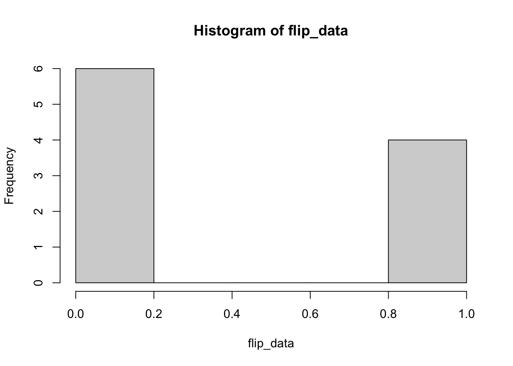

Chapter 5 Logistic Regression
We’ve asked you thus far to take our word regarding Generalized Linear Models (GLMs). In this chapter, we’re going to take a look at a certain type of data that we know violates our assumptions: binomial data. Here we’ll examine binomial data, see why ordinary least sqares falls apart, and consider some alternative methods (spoiler: it’s going to be one of our generalized linear models).
5.1 What is Binomial Data?
5.1.1 Refresher: Bernoulli and Binomial
Bernoulli and Binomial random variables are some of the most important to consider, because they get at real the roots of representing the stata of the world. A Bernoulli random variable considers the simplest possible datum: whether something is, or it isn’t. Numerically, we represent this as 1 or 0, just like computer data. And while I can use this to measure yes/no type data, such as “does a person own at least one pet?”, an astute observer will realise the same idea can apply to a variety concepts including:
- success / failure,
- wins / losses,
- heads / tails,
- exists / doesn’t exist
- has / doesn’t have
- is a member of a group of interest / is not a member
- or even, was my prediction realized?
Often, whatever resulted in creating this single Bernoulli instance might be something that repeats. In fact, if we hope to apply statistics to it, there needs to be many instances. If we can assume a constant probability across all iterations of the events we’re interested in, but want to ask questions about them in aggregate, that’s Bernoulli Binomial (or just binomial for short). Some examples of questions that fall into binomial data would be:
- is this strategy effective (i.e. does it affect the rates of success or failure across many trials?)
- is this baseball team better than another (i.e. do they win more games, not just a game?)
- if I bet money on getting four heads in a row, what kind of odds makes that a good gamble?
- if a mailcarrier is moving to a new route, if I know how many homes are \(\mu\)-probable to have an angry dog, what’s the liklihood that mail carrier will encounter an angry dog?
- if \(\mu\)-proportion of students have a medical condition I’m interested in, how many students will I need to talk to in order for it to be more likely than not I’ll talk to x of them? Way more likely than not? Almost certain?
- if my predictions are p-percent accurate, and the cost of failure is m dollars, is it worth spending more money for more accurate predictions?
Hopefully you’ll agree with me that questions of this type are actually extremely common.
5.1.2 Representing the Bernoulli distribution
Different texts use different language, so it’s to explain how we’ll be talking about Bernoulli and binomial distributions here. First, here’s the /Bernoulli distribution/ probability mass function.
\[\mathcal{P}(y;\mu)=\mu^{y}(1-\mu)^{1-\mu},\] where \(y\in\{0, 1\}, 0\leq\mu\leq1\).
This might be a bit different than what you’ve seen before, so lets talk about each variable.
- \(\mathcal{P}\): (\(\texttt{\\mathcal\{P\}}\) in TeX) is the probability mass function of a certain outcome. \(\mathcal{P}(y;\mu)\) then is the probability of event \(y\) when the success has a probability of \(\mu\).
- \(y\): is the number of successes. Since this is a single trial, it can only be 0 or 1 (described by the statement \(y\in\{0, 1\}\)).
- Basically, it lets us choose whether we’re predicting success or predicting failure all in one function.
- If we’re interested in the liklihood of an event not occuring \(y=0\), \(\mu^0=1\), and the PMF simplifies to \(\mathcal{P(1,\mu)}=1-\mu\).
- Conversely, if we’re interetsed in an event occuring, \(y-1\), \((1-\mu)^{(1-1)}=1\), and the PMF simplifies to \(\mathcal{P(1,\mu)}=\mu\).
- \(\mu\): (\(\texttt{\\mu}\) in TeX) is the probability of the event. But wait, isn’t \(\mu\) the mean, and also the expected value? Yes, exactly! Those are all the same in this PMF, so we use the same variable. Because many text books need you to consider those ideas separatey so you can discover that relationship, you might see it recorded elsewhere as \(p\), but since demonstrating that is beyond our scope here, we’ll use \(\mu\) to reduce complexity.
- It complicates using the formula elsewhere, but we could rewrite this as: \[ \mathcal{P}(y;\mu)= \begin{cases} \mu&\textrm{if }y=1\\ 1-\mu&\textrm{if }y=0\\ \end{cases}, 0\leq\mu\leq1 \]
5.1.3 Representing the binomial distribution
Intuitively, you likely recall that if \(P(\textrm{heads on one coinflip})=\frac{1}{2}\), then \[P(\textrm{heads twice on two coinflips})=P(\textrm{heads on one coinflip})^2=\frac{1}{2}\times\frac{1}{2}=\frac{1}{4}\]. However, just like the above PMF accounts for yes and no, our binomial PMF \(\mathcal{P}\) needs to account for yes and no, how many yesses we’re looking for, and how many trials there are overall. So here, we’ll use:
\[\mathcal{P}(y;\mu,m)=\binom{m}{my}\mu^y(1-\mu)^{m(1-y)}\] where \(y={0, 1/m, 2/m, ..., 1}, m \textrm{ is a positive integer, and }0<\mu<1.\)
Like before, this format might be a bit different than what you may have seen elsewhere, so let’s break it down.
- A reminder, \(\binom{n}{k}\), (written
\texttt{\binom{n}{k}}in TeX) is a combination \(n\) choose \(k\). More detail here. - \(\mathcal{P}\) (\(\texttt{\\mathcal\{P\}}\) in TeX) is the probability mass function (PMF) aka probability function. \(\mathcal{P}(y;\mu,m)\) then is the probability function of a binomial distribution for event \(y\) in the case of \(m\) Bernoulli trials with each trial having a probability of \(\mu\).
- \(m\) here is simply the number of trials easy.
- \(y\) here measures the proportion of successes (and actually it really is above as well–I’ll get to that in a moment).
- For example, if there are 4 trials and we want to see two successes, \(y/m=2/4=0.5\)
- This interacts interestingly in the combinatorial component. That \(my\) will always equal the numerator of \(y\). In the previous example then, the choose part of \(m\) choose \(my\) (aka \(\binom{m}{my}\)) will equal \(\binom{4}{2}\).
- If \(y=0\), \(\binom{m}{m0}=\binom{m}{0}=1\) (any choose 0, like any number raised to 0 equals 1). So, looking at this formula, if I want to know the odds of not getting any heads on four coin flips, then
- \[\mathcal{P}(y;\mu,m)=\binom{m}{my}\mu^y(1-\mu)^{m(1-y)}=\binom{4}{4\times0}\mu^0(1-\mu)^{4(1-0)}=1\times1\times(1-\mu)^4\]
- So assuming a fair coin where \(\mu=\frac{1}{2}\), then \(\mathcal{P}(y;\mu,m)=\mu^4=(\frac{1}{2})^4=\frac{1}{16}\), which fits our expectations. Neat!
5.1.4 What does a bunch of binomial data look like then?
possibilities <- c(0,1) # either heads (1) or tails (0).
# c(...) makes a list of whatever you include in the ...
probabilities <- c(0.5, 0.5)
# a 50% chance of heads, a 50% chance of tails.
(flip_data = sample(x = possibilities, size = 10, replace=TRUE, prob=probabilities))## [1] 1 0 0 1 0 0 1 0 0 1 # x is the vector of possible outcomes.
# size is the number of coin flips I want.
# we are flipping coin, not drawing from a deck, so ne
# second flip is just as likely to get heads or tails
# as the first: we *do* replace.
# prob is a vector of probabilities for each x
# encasing the whole thing in parentheses shows the
# value of the variable you set as you set itSo zeros and ones, we expect that (sorry if you’re the 2 in \(2^{10}\) readers who see all zeroes or ones). Lets check a simple histogram.
